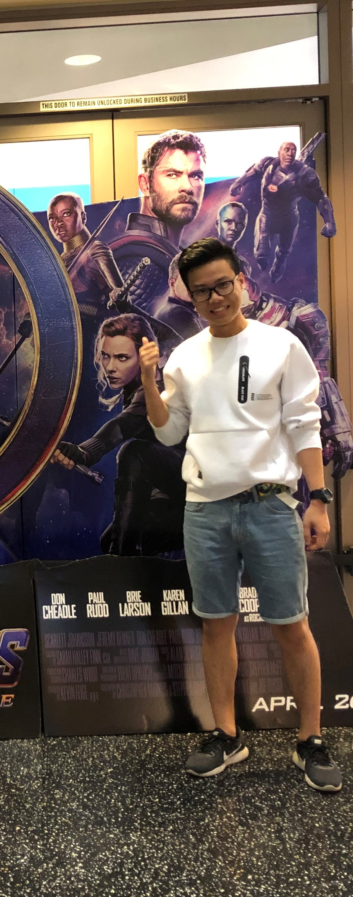

Kevin Yu
About Me
Name: Kevin Yu
Age: 22
Location: University of California San Diego
Major: Computer Science
Status: Single
Background
Hi, my name is Kevin Yu and I am a senior in UCSD. I was born in China and I could speak four languages.
More detail!
My family members have recently added two cats!
Hobbies
- Cooking: I am a home cook, feel free to share recipes with me!
- Coding: I am learning web dev, it would be great to study together.
- Gaming: I like to play single-player games, but mult-player is also ok!
- Running: I like to running and playing sports.
Goals
- To graduate at UCSD in this summer.
- To improve my communication skill and make friends.
- To get a good career and pay my student loan.
- To develop a running habit for good health.
Contact Me
- Email: ctyu@ucsd.edu
- LinkedIn: https://www.linkedin.com/in/kevin-32-yu/